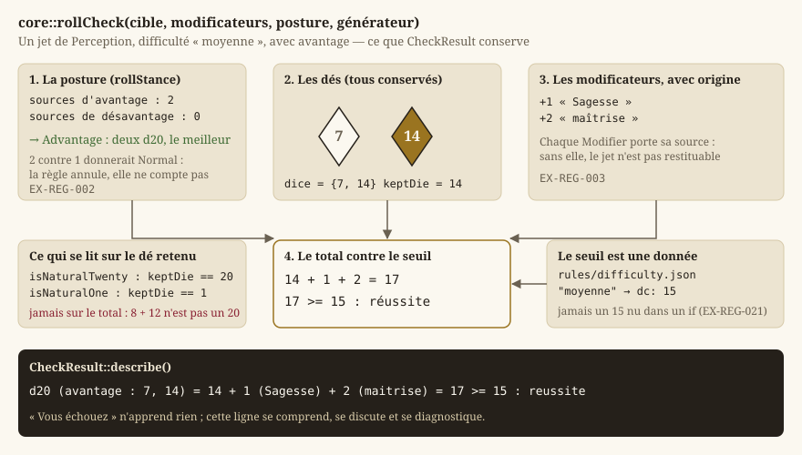
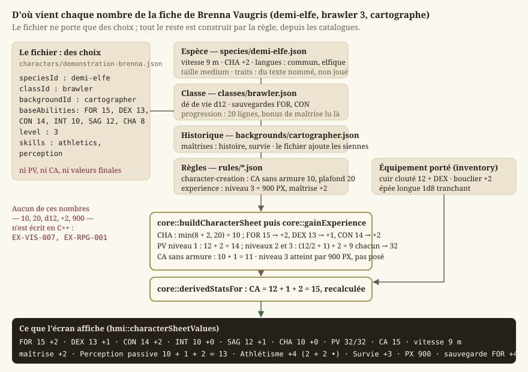
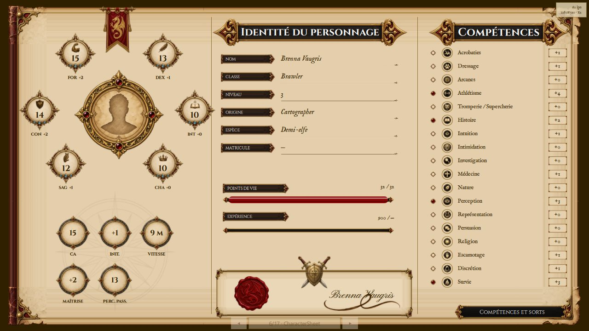
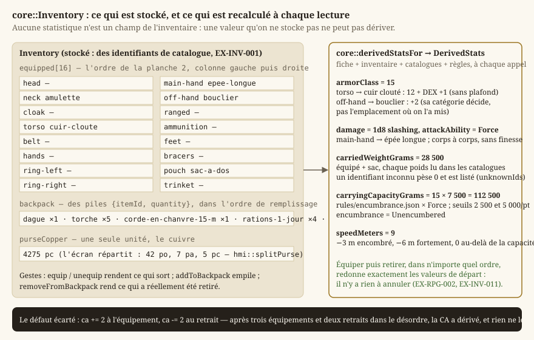
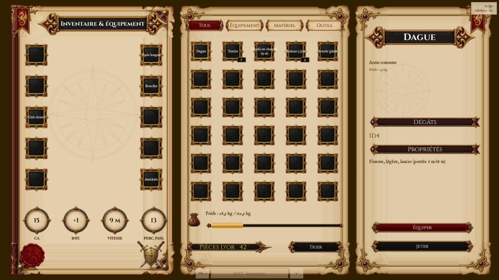
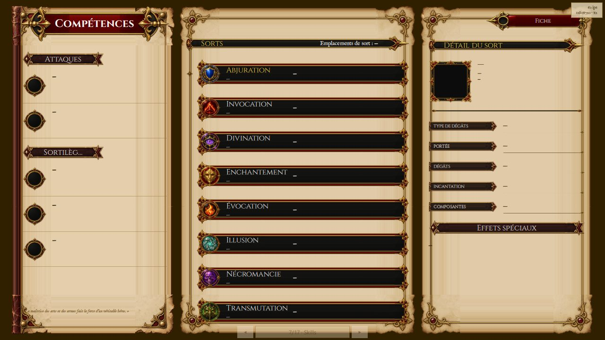

Règles d20 et personnages
Le jeu est un jeu de rôle à règles d20 : toute action incertaine se résout en lançant un dé à vingt faces, en lui ajoutant des modificateurs et en comparant le total à un seuil. Cette page explique ce vocabulaire depuis le début, puis décrit ce que Source/Core/Rpg/ en implémente : les dés, le jet, les caractéristiques, les compétences, la fiche de personnage, le multiclassage, l'équipement, l'inventaire et le bestiaire. Les dialogues, qui vivent dans le même dossier, sont traités avec le monde et l'exploration ; ce que le combat fait d'un jet d'attaque est dans le combat.
Le principe qui traverse tout le dossier tient en une phrase, posée avant le LOT-01 et écrite par le LOT-77 : le moteur porte des mécanismes, la donnée porte des valeurs (EX-VIS-007, regles-d20.md). Un dé, un seuil, un modificateur, un arrondi sont du C++ ; le nombre de faces d'un dé de vie, le seuil d'une difficulté « moyenne », la classe d'armure sans armure, la table d'expérience sont des fichiers JSON de Source/Elements/Rpg/ (Données, corpus et ressources). C'est ce qui permet de régler l'équilibre du jeu sans recompiler, et de charger un catalogue issu du SRD sans que le moteur ne connaisse le SRD.
Les définitions de base
Le lecteur connaît le C++ ; il ne connaît pas forcément le jeu de rôle sur table. Voici les mots que le reste de la page emploie sans les redéfinir.
| Mot | Ce qu'il désigne | Dans le code |
|---|---|---|
| Système d20 | Une famille de règles où toute résolution incertaine est un d20 plus des modificateurs contre un seuil (EX-REG-001). | core::rollCheck |
| Jet (check) | Un lancer de d20 résolu : les dés, les modificateurs, le seuil, l'issue. | core::CheckResult |
| Modificateur | Un entier, positif ou négatif, ajouté au dé. Il a toujours une origine : « +3 de Dextérité », « +2 de maîtrise ». | core::Modifier |
| Degré de difficulté (DD, DC) | Le seuil à atteindre ou dépasser pour réussir. Il est nommé (« moyenne ») et sa valeur (15) est une donnée. | core::DifficultyScale |
| Classe d'armure (CA) | Le seuil d'un jet d'attaque : ce qu'il faut atteindre pour toucher. | core::armorClassFor |
| Caractéristique | Une des six valeurs fondamentales d'une créature (Force, Dextérité, Constitution, Intelligence, Sagesse, Charisme), typiquement entre 1 et 20. De chacune dérive un modificateur : (valeur − 10) / 2, arrondi vers le bas. | core::Ability, core::abilityModifier |
| Compétence | Un domaine d'action nommé (Athlétisme, Discrétion, Perception…), rattaché à une caractéristique. Un personnage peut la maîtriser. | core::SkillDefinition |
| Bonus de maîtrise | Un bonus qui dépend du niveau et de rien d'autre, ajouté en entier à un jet maîtrisé, jamais partiellement (EX-REG-011). | core::proficiencyBonus |
| Jet de sauvegarde | Le jet que fait un personnage qui subit quelque chose (un poison, un sort), sur une caractéristique donnée. Certaines sont maîtrisées, selon la classe (EX-REG-020). | core::savingThrowModifier |
| Dé de vie | Le dé propre à une classe (d6 pour un mage, d12 pour un brawler) qui fixe les points de vie gagnés par niveau. | core::PlayableClass::hitDie |
| Espèce | Ce que le personnage est : vitesse, taille, augmentations de caractéristiques, langues, traits. Entièrement une donnée (EX-RPG-010). | core::Species |
| Classe | Ce que le personnage fait : dé de vie, sauvegardes maîtrisées, table de progression sur vingt niveaux (EX-RPG-020). | core::PlayableClass |
| Historique | D'où le personnage vient : maîtrises de compétences, langues accordées, une capacité (EX-RPG-011). | core::Background |
| Niveau, expérience | Le niveau se gagne en franchissant des seuils de points d'expérience ; plusieurs seuils d'un coup font gagner plusieurs niveaux (EX-RPG-031). | core::ExperienceTable, core::gainExperience |
| Multiclassage | Prendre des niveaux dans plusieurs classes. La règle la plus délicate est le cumul des emplacements de sorts (EX-RPG-041). | core::multiclassCasterLevel |
| Emplacement d'équipement | Une des seize places où un objet se porte : tête, torse, main directrice, main secondaire… Un emplacement porte au plus un objet (EX-INV-010). | core::EquipmentSlot |
| Encombrement | L'état dérivé du poids porté rapporté à la Force : libre, encombré, fortement encombré, au-delà de la capacité (EX-INV-020). | core::EncumbranceLevel |
Une fiche de personnage est l'agrégat de tout cela pour une créature donnée — héros, PNJ ou ennemi — et la règle qui la gouverne est qu'elle est dérivée : espèce, classe, historique, niveau et équipement en sont les sources, et toute valeur affichée en est calculée (EX-RPG-001).
Le hasard est déterministe
Aucune fonction de ce dossier ne tire un nombre au hasard toute seule. core::rollDice et core::rollCheck prennent un core::DeterministicRandom par référence : l'appelant choisit la graine, avance dans la suite, et peut rejouer exactement la même partie. Le déterminisme n'est pas un confort mais une exigence (EX-NFR-002) — sans lui, aucun test de combat n'est écrivable, et une sauvegarde rechargée ne redonnerait pas la même partie.
Le générateur lui-même (SplitMix64, Source/Core/Math/DeterministicRandom.h) est décrit avec les mathématiques du moteur. Ce qu'il faut en savoir ici tient à nextInt(min, max), qui rend un entier dans [min, max] bornes comprises et sans biais modulo : la forme évidente tirage % n favorise les premières valeurs quand 232 n'est pas un multiple de n, et rendrait indéfendable toute mesure de distribution. Le LOT-12 a vérifié sur 100 000 tirages qu'aucune des vingt faces ne s'écarte de plus de 10 % de la moyenne — et a trouvé au passage un défaut que la relecture n'aurait pas vu : la version qui rejetait la queue haute de l'intervalle bouclait sans fin pour toute puissance de deux (un d8 bloquait, un d20 passait). La version retenue rejette la queue basse, vide quand n divise 232.
Note — Les points de vie d'une montée de niveau ne sont pas tirés au dé, alors que le livre le permet : le moteur prend la valeur fixe (
core::maximumHitPointsFor), parce qu'une fiche dépendant d'un tirage rendrait une partie irrejouable.
Les dés : core::Dice
Un catalogue écrit "damage": "2d4+2", "hitDice": "4d10+4", ou simplement "4". Cette notation est une donnée ; core::Dice en est la forme analysée — count dés à faces faces, plus modifier — et core::parseDice la seule porte d'entrée du projet.
core::parseDice(notation)accepteNdF,NdF+M,NdF-Met une valeur fixe (countetfacesà zéro). La casse dudest indifférente ; aucun espace n'est admis. Elle rendstd::nulloptpour tout le reste — chaîne vide,ld8(la faute d'OCR que leLOT-30a documentée, où un1devient unl),1d6+2x(un résidu après le modificateur n'est pas une notation « à moitié valide »), ou une notation aberrante (plus de 100 dés, plus de 100 faces, modificateur au-delà de 999). Ces bornes ne brident pas le jeu : elles font qu'un999d999issu d'une extraction ratée est refusé à l'analyse plutôt que de faire tourner une boucle au milieu d'un tour. Une notation illisible est une donnée invalide à signaler, jamais une expression devinée ; c'est ainsi que le bestiaire et les armes la traitent.core::formatDice(dice)réécrit la notation canonique (2d6+3,1d8,4,1d6-1).core::Dice::minimumetcore::Dice::maximumdonnent les bornes du total (count + modifieretcount × faces + modifier) — utiles à l'IA tactique duLOT-23, qui raisonne en espérance.core::rollDice(dice, random)lance chaque dé avecnextInt(1, faces)et rend uncore::DiceRoll: l'expression, chaque face dans l'ordre du tirage, et le total, modificateur compris.DiceRoll::describe()restitue2d6+3 : 4 + 5 + 3 = 12. Chaque dé est conservé, pas seulement le total, parce qu'EX-REG-003demande qu'un jet soit reconstituable — et parce que c'est le seul outil de diagnostic praticable quand une capacité ne s'applique pas.
Le jet de d20 : core::rollCheck
Source/Core/Rpg/Check.h est le cœur du système. Une seule fonction résout tout ce qui est incertain — test de caractéristique, jet de sauvegarde, jet d'attaque — parce que trois résolutions différentes seraient trois occasions de diverger (EX-REG-001). Ce qui les distingue n'est pas le mécanisme mais les modificateurs qu'on lui passe (EX-REG-020), et cela se décide chez l'appelant.
{kind=link}

La posture : core::RollStance et core::rollStance
L'avantage fait lancer deux d20 et garder le meilleur ; le désavantage, garder le pire. Les deux ne se cumulent pas (EX-REG-002) : plusieurs sources d'avantage donnent un avantage, et une source de chaque s'annule entièrement. core::rollStance(avantages, desavantages) prend le nombre de sources de chaque type et rend Normal, Advantage ou Disadvantage — deux avantages contre un désavantage donnent Normal, pas Advantage. La règle annule, elle ne compte pas ; c'est contre-intuitif la première fois, et c'est précisément pour cela que la décision vit à un seul endroit plutôt que chez chaque appelant, qui aurait à arbitrer sa pile de bonus contre toutes les autres à chaque capacité ajoutée. core::rollStanceName donne le nom textuel (normal, avantage, desavantage) pour les journaux.
Le résultat : core::CheckResult
core::rollCheck(target, modifiers, stance, random) lance un d20 — deux si la posture n'est pas Normal —, retient le bon, ajoute les modificateurs et compare au seuil. Le core::CheckResult rendu conserve tout :
dice: les dés lancés, les deux en cas d'avantage ou de désavantage, pas seulement celui qui compte — c'est ce que le joueur veut voir pour savoir ce que son avantage lui a rapporté ;keptDie: le dé retenu (le meilleur, le pire, ou le seul) ;modifiers: chaquecore::Modifieravec sonsourceet savalue;total,target,stance(la posture effectivement appliquée, après annulation) ;succeeded(): vrai si le total atteint ou dépasse le seuil ;isNaturalTwenty()etisNaturalOne(): lus sur le dé retenu, jamais sur le total. Un 20 naturel déclenche le coup critique ; un total de 20 obtenu avec un 8 et douze points de bonus n'est qu'un total. Les confondre rendrait critique un jet sur deux à haut niveau, et le défaut passerait pour de l'équilibrage. Ce que le critique fait aux dégâts est l'affaire duLOT-21, pas de cette fonction, qui le signale seulement.
CheckResult::describe() produit la ligne restituable qu'EX-REG-003 exige : d20 (avantage : 7, 14) = 14 + 1 (Sagesse) + 2 (maitrise) = 17 >= 15 : reussite, suivie de (20 naturel) ou (1 naturel) le cas échéant.
Le combat l'emploie pour l'initiative (core::CombatState, avec un seuil de 0 : on ne réussit pas une initiative, on la classe) et pour l'attaque (core::weaponAttackFor) ; le dialogue l'emploie pour un test de compétence face à un PNJ (core::DialogueRunner, LOT-15).
Le seuil : core::DifficultyScale
target n'est jamais un littéral dans le code appelant (EX-REG-021) : un 15 nu dans un if ne dit pas ce qu'il représente. Un contenu écrit « Persuasion, difficulté moyenne », et core::loadDifficultyScale(path) lit Source/Elements/Rpg/rules/difficulty.json — six degrés, de tres-facile (5) à quasi-impossible (30), extraits de la table « Tâche / DD » du corpus. DifficultyScale::find(id) rend le core::DifficultyTier (identifiant, nom, dc) ou nullptr. Un degré sans identifiant ou sans nombre est écarté en le nommant dans errors : gardé à 0, il ferait réussir tout jet qui le vise, ce qui se joue et ne se voit pas. Le chargeur ne lève jamais (EX-NFR-040). Cette lecture manquait à rollCheck depuis le LOT-12 ; c'est le premier contenu à jeter un d20 hors combat — le dialogue — qui l'a rendue nécessaire.
Les six caractéristiques : core::Ability
core::Ability est un ensemble fermé de six valeurs, dans l'ordre de la fiche : Strength, Dexterity, Constitution, Intelligence, Wisdom, Charisma (EX-REG-010). Les fiches et les créatures les rangent dans un std::array<int, 6> indexé par cette énumération. Trois fonctions l'accompagnent :
core::abilityModifier(score)— le modificateur,(score − 10) / 2arrondi vers le bas. Le piège ne se voit que sur les scores impairs inférieurs à 10 : la division entière du C++ tronque vers zéro, si bien que(7 − 10) / 2vaut−1alors que la règle donne−2. Un personnage avec 7 en Force serait moins pénalisé qu'il ne doit l'être, sur chacun de ses jets, pendant toute la partie — et la formule a l'air juste. L'implémentation décale de 1 avant de diviser pour les écarts négatifs ; le casabilityModifier(7) == −2est un test explicite duLOT-12. Le modificateur est calculé, jamais stocké : deux sources de vérité pour la même valeur finissent toujours par se contredire.core::abilityName(ability)etcore::parseAbility(name)— l'aller-retour avec les noms que les données écrivent (strength,dexterity…). Un nom inconnu rendstd::nullopt, jamais une valeur devinée : deviner ferait jeter l'Athlétisme en Charisme sans qu'aucun message ne le dise.core::allAbilities()— les six dans l'ordre, pour balayer une énumération sans coder en dur sa dernière valeur.
Les noms sont ceux du lexique du LOT-30 et de common.schema.json ; scripts/checks/check_rpg_data.py vérifie en CI que les trois listes coïncident (EX-CNT-011).
Les compétences : core::SkillCatalog
La correspondance compétence → caractéristique est une donnée, jamais un switch (EX-REG-012). C'est elle qui décide que l'Athlétisme se jette en Force et la Discrétion en Dextérité, et une règle maison qui changerait ce rattachement ne doit pas demander de recompiler. Les dix-huit fichiers de Source/Elements/Rpg/skills/ viennent du LOT-43 ; chacun porte id, name et ability.
core::loadSkills(directory)balaie le dossier, trie les fichiers par nom puis le catalogue par identifiant (pour une sortie déterministe), et rend uncore::SkillCatalog: lescore::SkillDefinitionchargées et leserrors. Un dossier absent est une erreur, pas un catalogue vide : sans compétence, tout jet de compétence retomberait sur le modificateur nu, ce qui se joue et ne se voit pas. Une caractéristique inconnue ("ability": "luck") est signalée et la compétence écartée. Ne lève jamais (EX-NFR-040).SkillCatalog::find(id)rend la définition ounullptr.
Le modificateur d'un jet de compétence pour une fiche donnée est core::skillModifier, décrit avec la fiche plus bas.
L'échelle du monde : core::METERS_PER_TILE
Toutes les portées et vitesses du corpus sont en mètres — « allonge 1,50 m », « vitesse 9 m », « portée 6 m/18 m » — et la grille tactique compte en cases. La conversion existe forcément quelque part, et le seul choix ouvert était à un endroit, ou à trente. À trente, il suffit qu'un seul emploie 1,52 (les cinq pieds d'origine) pour qu'une portée de six cases en devienne cinq ailleurs. Source/Core/Rpg/Scale.h fige donc une case = 1,5 m (EX-REG-051), avec core::tilesFromMeters et core::metersFromTiles en constexpr. C'est ce que la fiche emploie dans CharacterSheet::speedInTiles(), et ce que le déplacement (LOT-19) et la portée (LOT-22) consomment.
Les énumérations fermées : core::DamageType, core::Condition, core::MagicSchool, core::CreatureSize
Source/Core/Rpg/RpgEnums.h déclare quatre ensembles fermés, fixés par les règles et non par le corpus (EX-CNT-011) :
| Énumération | Valeurs | Ce qui en dépend |
|---|---|---|
core::DamageType | 13 : contondant, perforant, tranchant (les trois physiques), puis acide, froid, feu, force, foudre, nécrotique, poison, psychique, radiant, tonnerre | les dégâts typés du combat (EX-CBT-032), les résistances du bestiaire |
core::Condition | 15, dont Exhaustion, la seule non binaire (six niveaux) | les états du combat (EX-REG-040) ; l'effet d'une condition est dans conditions/, jamais dans l'énumération |
core::MagicSchool | 8 : abjuration, invocation (conjuration — le faux ami que le lexique fige), divination, enchantement, évocation, illusion, nécromancie, transmutation | l'écran des sorts |
core::CreatureSize | 6 : Tiny à Gargantuan | l'emprise sur la grille (LOT-19), ce qu'une créature peut agripper |
Source/Core/Rpg/RpgEnumNames.h est le point unique de correspondance valeur ↔ nom, partagé par les catalogues, leurs schémas et le moteur. Deux tables distinctes divergeraient au premier type ajouté, et le scénario qu'EX-CNT-011 décrit se produirait : la donnée déclare un type que le moteur ne connaît pas, la valeur tombe dans un cas par défaut, et le sort cesse de faire des dégâts sans que rien ne l'annonce. Trois familles de fonctions, pour chacune des quatre énumérations :
core::damageTypeName,core::conditionName,core::magicSchoolName,core::creatureSizeName— unswitchexhaustif et sansdefault: ajouter une valeur sans lui donner de nom est une erreur de compilation (/W4 /WX), jamais un nom faux ;core::parseDamageType,core::parseCondition,core::parseMagicSchool,core::parseCreatureSize— les inverses exacts,std::nulloptpour un nom inconnu. Les tables inverses sont construites à partir des fonctions de nommage (à la première analyse, une table par énumération), jamais saisies à la main : l'aller-retour est exact par construction, pas par vigilance ;core::allDamageTypes,core::allConditions,core::allMagicSchools,core::allCreatureSizes— les valeurs dans l'ordre de déclaration, pour qu'un test balaie une énumération sans coder en dur sa dernière valeur.
Les noms sont ceux du lexique du LOT-30 ; check_rpg_data.py vérifie la coïncidence pour trois énumérations contre le lexique, et pour CreatureSize contre common.schema.json — le glossaire du corpus omet « Moyenne » de sa catégorie taille.
Espèces, historiques, classes : core::CharacterOptions
Source/Core/Rpg/CharacterOptions.h charge les trois catalogues dont une fiche se construit (LOT-36) : 22 espèces, 13 historiques, et les 4 classes provisoires — brawler, mage, priest, scoundrel — qui servent de socle au combat en attendant les seize classes complètes du LOT-47.
core::Species—size,speed(en mètres : les livres de Tanares comptent en pieds, la conversion est faite à l'extraction pour qu'un seul système d'unités arrive ici),abilityScoreIncrease(une table indexée parcore::Ability, jamais une phrase : c'est la seule forme que le moteur puisse appliquer ; une case à zéro signifie « pas d'augmentation »),parentSpeciespour une sous-espèce,languages,traits(du texte nommé,core::NamedTrait, non joué) etrequiredMechanisms.Species::increase(which)lit la table.core::Background—skillProficiencies(des identifiants du catalogue duLOT-43),languageCount(un historique accorde un nombre de langues au choix, pas une liste), unefeaturefacultative.core::PlayableClass—hitDie,primaryAbility,savingThrowProficiencies, et uneprogressionde vingtcore::ClassLevel(niveau, bonus de maîtrise, capacités). La table de progression est une donnée, jamais une règle en C++ : le bonus de maîtrise se lit ligne à ligne (PlayableClass::atLevel(level)), et aucune formule du moteur ne le recalcule. La formule générale donnerait le même résultat, et c'est précisément le piège : l'écrire ferait cesser de lire la donnée, et une classe à progression inhabituelle n'aurait plus rien à changer dans le code.statusest uncore::ProvisionalStatus(EX-CNT-032) :provisional,reason, etremovalCriterion— écrit d'avance, parce qu'une donnée provisoire non marquée devient permanente par accident.core::loadCharacterOptions(speciesDir, backgroundsDir, classesDir)balaie chaque dossier, jamais énuméré dans le code (une liste de noms en C++ serait une seconde source de vérité), trie par identifiant et rend uncore::CharacterOptions. Un dossier absent produit une erreur, pas un catalogue vide. Une espèce sans taille ou sans vitesse, une classe sans dé de vie sont écartées en le disant ; une caractéristique inconnue danssavingThrowProficienciesou dans une augmentation est signalée, jamais ignorée. Ne lève jamais (EX-NFR-040).CharacterOptions::findSpecies,findBackground,findClass— par identifiant,nullptrsinon.CharacterOptions::requiredMechanisms()— l'union dédupliquée des mécanismes que les espèces exigent et que le moteur n'honore pas encore (EX-CNT-031) : l'augmentation « au choix du joueur » des espèces de Tanares, par exemple. Le moteur la liste au chargement plutôt que de jouer en silence une espèce qu'il croit complète.CharacterOptions::provisionalClassIds()— les classes marquées provisoires ; un test balaieSource/Elements/Rpg/et vérifie qu'aucune donnée définitive ne les cite.core::abilityScoreWith(species, which, baseScore, maximumScore)— la seule opération que le moteur fait sur une espèce :min(base + augmentation, plafond). Le plafond est un paramètre, lu dansrules/character-creation.json, et non un20écrit ici (EX-VIS-007) — leLOT-36l'avait codé en dur, leLOT-13l'a sorti.
La fiche : core::CharacterSheet
core::CharacterSheet (LOT-13) est la fiche de toute créature jouable ou non — héros, PNJ, ennemi. Deux décisions de conception la gouvernent.
Un objet autonome, jamais un singleton joueur. Le cadrage est « un héros au départ, quatre à terme » ; le passage au groupe (LOT-29) ne doit rien changer à ce type. Aucune fonction du fichier ne prend « le personnage » implicitement : toutes reçoivent la fiche sur laquelle elles travaillent, et quatre fiches vivent côte à côte sans se connaître — un test le rend exécutoire. Le composant ECS core::RpgActor ne porte pas la fiche, il la désigne par un indice : une fiche survit à l'entité qui la représente quand le héros change de carte.
Une fiche se construit, elle ne se déclare pas. Tous les champs chiffrés partent de zéro, et aucun ne porte de valeur « raisonnable » par défaut : un armorClass = 10 dans la structure serait la règle du livre écrite en C++ (EX-VIS-007), et une fiche à demi construite passerait pour une fiche jouable. La fiche porte des valeurs, pas des règles : le bonus de maîtrise ne s'y trouve pas, il se lit dans la table d'expérience au niveau courant — le stocker le figerait à la construction, et une montée de niveau laisserait un personnage avec le bonus de l'ancien.
{kind=link}

Les champs
name ; les trois identifiants speciesId, classId, backgroundId (vides pour une créature du bestiaire) ; abilities, les six valeurs finales, augmentations d'espèce comprises ; level, experiencePoints, maximumHitPoints, currentHitPoints, armorClass ; speedMeters (en mètres, l'unité du corpus) ; skillProficiencies et savingThrowProficiencies (des ensembles) ; languages (EX-RPG-042, LOT-15 : celles de l'espèce, recopiées, plus celles que la fiche choisit — elles ne sont pas décoratives, un dialogue se refuse faute de langue commune). Quatre accesseurs : ability(which), modifier(which) (qui appelle core::abilityModifier), isDown() (points de vie courants à zéro ou moins) et speedInTiles() (par core::tilesFromMeters).
Les deux tables de règles
core::ExperienceTable, chargée parcore::loadExperienceTabledepuisrules/experience.json: vingtcore::ExperienceLevel(niveau, seuil d'expérience, bonus de maîtrise), triés par niveau. Aucune de ces quarante valeurs n'est écrite en C++ — c'est la donnée la plus tentante à coder en dur du projet, vingt seuils et vingt bonus tiendraient en trois lignes, et la plus coûteuse à y laisser : équilibrer la progression demanderait alors une recompilation à chaque essai.levelFor(px)rend le plus haut niveau dont le seuil est atteint (0 si la table est vide) ;proficiencyBonusAt(level)etthresholdAt(level)rendent 0 si la table ne porte pas ce niveau ;maximumLevel()le niveau le plus élevé. Une ligne incomplète est signalée et sautée.core::CharacterCreationRules, chargées parcore::loadCharacterCreationRulesdepuisrules/character-creation.json:unarmoredArmorClass(10) etmaximumAbilityScore(20), chacune accompagnée dans le fichier de la phrase du livre qui l'atteste.ok()exige que les deux aient été lues : une règle absente ne se devine pas, lui donner une valeur par défaut la ferait passer pour une règle du jeu.
Construire : core::buildCharacterSheet
core::buildCharacterSheet(name, baseAbilities, species, playableClass, background, rules, table) transforme les trois catalogues en fiche jouable de niveau 1. Les trois pointeurs peuvent être nullptr — une créature sans espèce est légitime, une fiche sans classe n'a ni dé de vie ni sauvegardes. Dans l'ordre : l'espèce donne la vitesse, ses langues, et ses augmentations appliquées à chaque valeur de base par abilityScoreWith (plafond lu dans rules) ; la classe donne les sauvegardes maîtrisées et les points de vie maximaux par maximumHitPointsFor ; les points de vie courants sont mis au maximum ; l'historique donne ses maîtrises de compétences ; la classe d'armure vaut unarmoredArmorClass + modificateur de Dextérité (l'armure portée la remplacera par derivedStatsFor) ; l'expérience est posée au seuil du niveau 1.
Les points de vie : core::maximumHitPointsFor
core::maximumHitPointsFor(hitDie, level, constitutionModifier) applique la règle du livre dans sa voie déterministe : le niveau 1 reçoit le maximum du dé (la raison pour laquelle un mage de niveau 1 n'a pas trois points de vie), chaque niveau suivant sa moyenne arrondie au supérieur, soit hitDie / 2 + 1 pour tout dé pair — et tous le sont. Le modificateur de Constitution s'ajoute à chaque niveau, et le gain d'un niveau vaut au minimum 1 : une Constitution désastreuse fait gagner peu de points de vie, elle n'en fait pas perdre. Un dé ou un niveau nul ou négatif rend 0. Le dé de vie est lu dans la donnée de la classe, jamais passé en littéral.
Monter de niveau : core::gainExperience
core::gainExperience(sheet, table, hitDie, amount) ajoute des points d'expérience et applique la montée qui en découle, sur place. Reproductible : aucune part de hasard, le résultat ne dépend que de la fiche, de la table et du montant. Trois règles y sont écrites :
- un montant nul ou négatif est ignoré — perdre de l'expérience n'est pas une règle de ce jeu, et l'accepter en silence ferait descendre un personnage de niveau ;
- le franchissement de plusieurs seuils d'un coup donne le niveau que le total accorde, pas le suivant (
EX-RPG-031), borné parmaximumLevel(); le seuil exact fait monter, un point de moins non ; - monter de niveau n'est pas un soin : les points de vie courants montent du gain, pas jusqu'au maximum — rendre toute sa vie à un personnage blessé ferait de la montée une potion gratuite.
Le core::LevelUpResult rendu dit ce qui s'est passé — niveaux avant et après, points de vie gagnés, bonus de maîtrise avant et après, gainedLevel() — pour que le joueur puisse le reconstituer et qu'un test vérifie chaque marche (EX-REG-003).
Les modificateurs d'une fiche
core::proficiencyBonus(sheet, table)— lu dans la table au niveau courant (EX-REG-011).core::savingThrowModifier(sheet, table, which)— le modificateur de caractéristique, plus le bonus de maîtrise si la fiche maîtrise cette sauvegarde.core::skillModifier(sheet, table, catalog, skillId)— la caractéristique vient du catalogue (SkillCatalog::find), le bonus de maîtrise s'ajoute siskillProficienciescontient l'identifiant. Lecore::SkillCheckModifierrendu portevalue,proficientetfound: une compétence inconnue du catalogue rend un résultat vide et le signale parfound == false, plutôt que de laisser croire à une maîtrise absente.
Charger un personnage : core::loadCharacterSheet
core::loadCharacterSheet(path, options, rules, table) lit un fichier de Source/Elements/Rpg/characters/ (schéma character.schema.json, LOT-38) et rend un core::LoadedCharacterSheet : la sheet, l'inventory (ce que le personnage porte, LOT-14 ; vide si le fichier n'en déclare pas — un personnage sans inventaire a les mains vides, ce n'est pas une erreur) et les errors, qui voyagent avec la donnée et jamais à sa place (EX-CNT-010).
Le fichier ne porte que des choix — espèce, classe, historique, baseAbilities (les six exigées : une fiche à cinq caractéristiques n'existe pas, et laisser la sixième à zéro donnerait un modificateur de −5 que rien ne signalerait), niveau visé, compétences, langues choisies, inventaire. Tout le reste est dérivé : la fiche est construite par buildCharacterSheet, puis le niveau s'atteint par gainExperience jusqu'au seuil du niveau visé — le même chemin qu'une partie empruntera, donc les mêmes points de vie et le même bonus de maîtrise qu'un personnage monté en jouant. Écrire ces valeurs dans le fichier en ferait une seconde source, qui différerait de la première au premier ajustement de règle. Les trois identifiants sont résolus dans le catalogue et un identifiant inconnu est signalé : une fiche qui référence une espèce absente s'afficherait sans vitesse ni augmentation, ce qui ressemble à un personnage faible et non à une donnée fausse. Un emplacement d'équipement inconnu est signalé et ignoré. Ne lève jamais (EX-NFR-040).
{kind=link}

Le personnage affiché est le héros de la démo, heros-brawler.json (LOT-112) : la fiche pré-tirée du Brawler du Player's Guide to Tanares (p. 195), reprise telle quelle. Il remplace Brenna Vaugris, la fiche provisoire de la capture, que son critère de retrait (EX-CNT-032) faisait disparaître au premier personnage réel. Un écart reste connu : la fiche du livre affiche une CA de 14, qui vient de Tough as Nails (10 + Dextérité + Constitution, sans armure) ; les capacités de classe arrivent en 0.0.2, et d'ici là le jeu affiche la CA sans armure du moteur, 11.
Le multiclassage : core::multiclassCasterLevel
Un personnage qui prend des niveaux dans plusieurs classes lanceuses de sorts cumule un niveau de lanceur qui désigne sa ligne dans la table des emplacements. C'est « la règle qu'il est le plus facile d'implémenter de travers » (EX-RPG-041), parce qu'un lanceur multiclassé mal calculé reste jouable, simplement faux. Source/Core/Rpg/Multiclassing.h (LOT-43) en porte le mécanisme ; la correspondance classe → rythme est une donnée (rules/multiclassing.json), attestée sur la phrase du Manuel des Joueurs p. 166.
core::CasterProgression—None(barbare, moine),Third(guerrier et roublard sous archétype),Half(paladin, rôdeur),Full(barde, clerc, druide, ensorceleur, magicien) etPact— la magie de pacte de l'occultiste, qui n'entre pas dans la somme (EX-RPG-052) : ses emplacements sont peu nombreux, toujours au niveau maximal, récupérés au repos court, et les additionner doublerait la puissance du personnage sans que rien ne le signale.core::ClassLevel(celui deMulticlassing.h, distinct de la ligne de progression deCharacterOptions.h) — un niveau pris dans une classe et le rythme de cette classe.core::multiclassCasterLevel(classes)— la somme des contributions, bornée à 20. L'arrondi se fait par classe, jamais sur le total : un paladin 3/rôdeur 3 donne1 + 1 = 2, et non⌊6/2⌋ = 3— sommer d'abord donne un emplacement de trop, à un niveau où c'en est un tiers de plus. Un niveau nul ou négatif n'apporte rien. La fonction est vérifiée contre l'exemple travaillé du livre lui-même : un rôdeur 4/magicien 3 « est considéré comme un personnage de niveau 5 ».core::casterProgressionNameetcore::parseCasterProgression— l'aller-retour avec les noms de la donnée (none,third,half,full,pact) ; un nom inconnu rendstd::nullopt, jamaisNone, ce qui ferait taire un lanceur.
Note — Rien dans le moteur ne consomme encore ce niveau de lanceur : les sorts et les emplacements attendent leurs lots. La fonction existe parce que la donnée existe, et parce que la vérifier contre le livre coûte moins que de la retrouver fausse plus tard.
Armes et armures : core::EquipmentCatalog et core::armorClassFor
Source/Core/Rpg/Equipment.h (LOT-34) charge les 37 armes et les 13 armures des tables d'équipement, et calcule la classe d'armure.
core::Weapon—category(simpleoumartial),ranged,damageetdamageTypefacultatifs (le filet n'inflige rien et entrave ; lui inventer des dés en ferait une arme qui touche pour rien),priceen pièces de cuivre (l'unité interne du projet,LOT-32),weightGrams,text(les propriétés en toutes lettres) etproperties— les mêmes, structurées (finesse,light,reach,thrown,versatile…), tirées de la colonne des propriétés à l'extraction (LOT-22) : une règle qui en dépend les lit ici, jamais dans la prose.rangeNormaletrangeLongen mètres pour une arme qui se tire ou se lance.core::hasProperty(weapon, "finesse")interroge la liste.core::Armor—category(core::ArmorCategory:Light,Medium,Heavy,Shield),baseArmorClass(ou le bonus du bouclier),dexterityBonus,dexterityBonusMax(le+2des armures intermédiaires),strengthRequired,stealthDisadvantage, prix et poids. Le bouclier est dans l'énumération parce que le livre le met dans la même table ; mais il n'est pas une armure — il ajoute à la classe d'armure au lieu de la remplacer, et les confondre donnerait un personnage en bouclier seul avec une CA de 2.core::armorCategoryNameetcore::parseArmorCategoryfont l'aller-retour avec les noms de la donnée.core::loadEquipment(weaponsDir, armorsDir)balaie les deux dossiers et rend uncore::EquipmentCatalog(weapons,armors,errors,findWeapon,findArmor). Une notation de dés illisible ou un type de dégâts inconnu sont signalés ; une catégorie d'armure inconnue écarte l'armure. Ne lève jamais.core::armorClassFor(sheet, rules, armor, shield)— les trois formes de la colonne CA du livre disent trois règles différentes, et les réduire à leur premier nombre est la faute qui ne se voit pas :
| Ce que le livre écrit | Ce que la fonction fait |
|---|---|
11 + Mod.Dex | dexterityBonus sans plafond : la Dextérité s'ajoute entière (armures légères) |
14 + Mod.Dex (max +2) | dexterityBonusMax : min(Dex, 2) (armures intermédiaires) |
18 | pas de dexterityBonus : elle ne s'ajoute pas du tout (armures lourdes) |
Appliquer la Dextérité au harnois rendrait le personnage plus résistant, jamais moins : le défaut ne provoque aucune erreur et passe pour de l'équilibrage. Sans armure (armor == nullptr, ou un bouclier passé à sa place), la base vient de rules.unarmoredArmorClass et non d'un 10 écrit ici ; le bouclier, s'il en est bien un, ajoute son baseArmorClass. Un test vérifie les treize armures contre la colonne du livre, avec une Dextérité de 18 choisie pour révéler la faute.
core::totalWeightGrams(entries)— la somme decore::InventoryEntry(poids unitaire × quantité, une quantité nulle ou négative ne pesant rien). Sa raison d'être est l'unité unique : le livre écrit des kilogrammes et des grammes dans la même table, et mêler les deux donnerait un sac de cinq cents kilos pour une poignée de fléchettes. La conversion est faite à l'extraction.
L'inventaire : core::Inventory et core::derivedStatsFor
Source/Core/Rpg/Inventory.h (LOT-14) porte ce qu'un personnage a sur lui, et ce que cela produit. Le critère d'acceptation du lot disait : retirer un équipement doit annuler exactement son effet. La parade n'est pas un test, c'est une absence de champ.
{kind=link}

Ce qui est stocké
core::Itemetcore::ItemCatalog— les 125 objets qui ne sont ni arme ni armure :category(gear,tool,mount…), prix en cuivre,weightGrams(un objet sans poids déclaré ne pèse rien : c'est le cas des objets dont le livre ne donne pas la masse, pas un oubli à corriger par une valeur inventée),stackable,rarity,requiresAttunement(EX-INV-041).core::loadItemsbalaieRpg/items/; un objet sans identifiant est écarté en le disant.core::EquipmentSlot— les seize emplacements de la planche 2 du corpus, dans l'ordre de la feuille, colonne gauche puis droite :Head,Neck,Cloak,Torso,Belt,Hands,RingLeft,RingRight,MainHand,OffHand,Ranged,Ammunition,Feet,Bracers,Pouch,Trinket. L'ordre est relevé, pas choisi : c'est celui que l'écran suit.core::EQUIPMENT_SLOT_COUNTvaut 16 ;core::equipmentSlotNameetcore::parseEquipmentSlotfont l'aller-retour avec les noms de la donnée (main-hand,ring-left…), depuis une table unique parcourue dans les deux sens.core::Inventory—equipped, un tableau de seize identifiants de catalogue (chaîne vide pour un emplacement libre) ;backpack, descore::InventoryStack(identifiant, quantité) dans l'ordre de remplissage ;purseCopper, la bourse dans la même unité que les prix.at(slot)etisEquipped(slot). L'inventaire est une liste d'identifiants, jamais une copie des propriétés de l'objet (EX-INV-001) : corriger le prix d'une épée corrige toutes les épées du monde. Et aucune statistique n'y est stockée — ni classe d'armure, ni poids, ni encombrement. Le défaut classique consiste à appliquer un bonus à la volée (ca += 2) et à le retrancher au retrait ; après trois équipements et deux retraits dans le désordre, la classe d'armure a dérivé, et rien ne le signale. Une valeur qu'on ne stocke pas ne peut pas dériver (EX-RPG-002).
Les gestes
core::equip(inventory, slot, itemId)pose un objet et rend ce que l'emplacement portait, plutôt que de le perdre. Aucune règle de compatibilité n'est appliquée ici : ranger une armure à l'emplacement de tête est une question de donnée et d'interface. Ce que la fonction garantit est plus étroit et plus utile : un emplacement ne porte jamais deux choses.core::unequip(inventory, slot)retire et rend l'identifiant retiré.core::addToBackpack(inventory, itemId, quantity)empile sur la ligne existante ou en crée une ; un identifiant vide ou une quantité nulle ou négative sont sans effet.core::removeFromBackpack(inventory, itemId, quantity)retire au plus ce qu'il y a, efface la ligne à zéro, et rend ce qui a réellement été retiré.
Ce qui est recalculé
core::ItemLookup— les deux catalogues qu'un inventaire consulte (items,equipment).weightGramsOf(id)cherche dans les objets, puis les armes, puis les armures ; un identifiant inconnu pèse zéro.core::carriedWeightGrams(inventory, lookup)— le poids de l'équipé et du sac, en grammes.core::unknownIds(inventory, lookup)— les identifiants que les catalogues ne portent pas, triés et dédupliqués : un sac qui en contient ne pèse pas ce qu'il devrait, et le dire vaut mieux que de peser faux en silence — c'est ce qui distingue « inconnu » de « réellement sans masse ».core::EncumbranceRules, chargées parcore::loadEncumbranceRulesdepuisrules/encumbrance.json: la capacité (7 500 g par point de Force), les deux seuils (2 500 et 5 000 g par point) et les pénalités de vitesse (3 et 6 m), chacun avec la phrase du corpus qui l'atteste, page 68. En grammes par point de Force et non en kilogrammes, pour la même raison que partout.isLoaded()est faux si le fichier manque : le calcul de charge se déclare alors indisponible plutôt que de se remplacer par des valeurs « raisonnables ».core::weaponAttackAbility(sheet, weapon)— la caractéristique du jet d'attaque : Force au corps à corps, Dextérité à distance ; une arme de finesse laisse le choix, et le personnage prend la meilleure des deux. Une seule écriture de la règle, que la fiche (derivedStatsFor) et l'attaque (core::weaponAttackFor) lisent toutes deux.core::derivedStatsFor(sheet, inventory, lookup, creation, carrying)— le cœur du lot. Rend uncore::DerivedStatsentièrement fonction de l'inventaire et des catalogues au moment de l'appel :armorClass: l'armure lue auTorso, le bouclier à l'OffHand, puisarmorClassFor. Un bouclier rangé au torse reste un bouclier — c'est sa catégorie qui dit comment il compte, pas l'emplacement où on l'a mis (les deux pointeurs sont échangés au besoin) ; une armure à l'OffHandne compte pas comme bouclier ;damage,damageType,attackAbility: depuis l'arme enMainHand— absents pour une main vide ou un filet ;carriedWeightGrams,carryingCapacityGrams(capacité × Force),encumbrance(core::EncumbranceLevel:Unencumbered,Encumbered,HeavilyEncumbered,OverCapacity) etspeedMeters: la vitesse de base moins 3 m encombré, moins 6 m fortement encombré, zéro au-delà de la capacité — le comportement au dépassement est défini ici plutôt que laissé à chaque appelant ; jamais négative. Sans règles de charge chargées, l'encombrement resteUnencumberedet la capacité vaut zéro : la fiche ne prétend pas connaître une règle qui manque.
Équiper puis retirer, dans n'importe quel ordre, redonne exactement les valeurs de départ : il n'y a rien à annuler, puisqu'il n'y a rien eu à appliquer. Le test LaClasseDArmureNeDerivePasAvecLOrdre joue six ordres pour que la propriété reste vraie le jour où quelqu'un ajoutera un champ « pour aller plus vite ».
Attention — Le désavantage de l'encombrement lourd (aux jets de caractéristique, d'attaque et de sauvegarde) est calculé et nommé, pas appliqué : c'est au système de jets de le compter comme source de désavantage dans
rollStance. De même, rien ne consomme encore un objet ;removeFromBackpackexiste et est testé, mais aucun geste de jeu ne l'appelle.
{kind=link}

Deux choses de cette capture sont des règles d'affichage et vivent dans l'écran, pas dans le modèle : la bourse, que le modèle compte en cuivre et que l'écran répartit en or, argent et cuivre (hmi::splitPurse) ; et les poids, comptés en grammes et lus en kilogrammes — un sac de 28 500 g ne se lit pas.
Le bestiaire : core::Bestiary
Source/Core/Rpg/Bestiary.h (LOT-33) charge les 94 créatures de Source/Elements/Rpg/creatures/, un fichier JSON par créature, décrit par creature.schema.json. Une créature n'est pas une CharacterSheet : elle n'a ni espèce, ni classe, ni progression ; ses valeurs sont nues, telles que le bloc de statistiques du livre les donne.
core::Creature—size(core::CreatureSize),creatureType(en français et ouvert : le Sourcebook en introduira que le SRD ignore),alignment,armorClass,hitPoints,hitDice(core::Dice, facultatif),speed(core::CreatureSpeed:walktoujours renseignée,fly,swim,climb,burrowfacultatives, en mètres),abilities(les six, indexées parcore::Ability: aucune n'a de valeur de repli — une caractéristique laissée à 10 par défaut masquerait une extraction incomplète),challengeRating(le facteur de puissance d'EX-REG-050, flottant parce que fractionnaire sous 1 : 1/8, 1/4, 1/2),skills(bonus par identifiant du catalogue),senses,languages, les listes typéesdamageResistances,damageImmunities,damageVulnerabilities(core::DamageType) etconditionImmunities(core::Condition),traits(core::CreatureTrait),actions,description(le paragraphe d'ambiance du livre) etrequiredMechanisms(EX-CNT-030).ability(which)etaction(name).core::CreatureAction— letextest toujours présent ; les champs typés (attackBonus,reach,damage,damageType,rangeNormal,rangeLong) ne le sont pas. Une action qui n'inflige aucun dégât — l'invisibilité du diablotin, la toile de l'araignée géante — n'a ni bonus ni dés, et ce n'est pas une extraction incomplète : c'est la donnée. D'où lesstd::optional, qui distinguent « pas de dégâts » de « zéro dégât ». Une seule clause de dégâts est typée par action : une morsure qui inflige « 7 (1d10 + 2) dégâts perforants + 5 (1d10) dégâts de poison » en porte deux,damagene rend que la première, ettextfait foi jusqu'à ce que le combat sache composer plusieurs clauses. Le champ n'est pas faux, il est partiel, et c'est écrit dans l'en-tête parce que rien dans la donnée ne le dit.core::loadBestiary(directory)balaie le dossier (jamais une liste de 94 noms écrite en C++ : la première créature ajoutée en sortirait invisible), trie les fichiers puis les créatures par identifiant, et rend uncore::Bestiary:creatureseterrors, ensemble — un catalogue dont une entrée sur quatre-vingt-quatorze est illisible reste utilisable, et le refuser en bloc rendrait le jeu injouable pour une virgule (EX-CNT-010). Un champ obligatoire absent écarte la créature en nommant le fichier et la raison ; une vitessewalkabsente est une extraction incomplète, pas une créature immobile (celle-ci portewalk: 0) ; une valeur d'énumération inconnue — type de dégâts, condition, taille — est signalée, jamais ignorée, sinon l'effet se tairait sans qu'aucun message ne le dise (EX-CNT-011) ; une notation de dés illisible est signalée et le champ reste absent. Un dossier absent produit une erreur, pas un bestiaire vide : « pas installé » et « aucune créature » se ressemblent à l'exécution. Ne lève jamais.Bestiary::find(id)etBestiary::requiredMechanisms()— la seconde rend l'union dédupliquée des mécanismes que les créatures exigent et que personne n'a encore honorés (EX-CNT-031) : la résistance conditionnelle « aux attaques non magiques », par exemple, que mettre dansdamageResistancesrendrait le diablotin résistant à une masse d'armes ordinaire. Le moteur la liste au chargement plutôt que de la jouer de travers.
Le test du lot rejoue douze profils contre des valeurs recopiées à la main du PDF, page imprimée à l'appui : un test qui comparerait la sortie de la génération à elle-même passerait quelle que soit la faute d'extraction.
Ce que les écrans en montrent
Core/Rpg/ ne dépend ni de Qt, ni de l'ECS, ni du rendu (EX-NFR-010) : il compile et se teste seul. Ce que le jeu en affiche passe par deux couches décrites avec l'IHM Qt :
- une fonction pure
identifiant → textepar écran, sans Qt ni disque —hmi::characterSheetValues(Source/HMI/Presentation/CharacterSheetValues.h,LOT-38) ethmi::inventoryValues(InventoryValues.h,LOT-14). C'est là que se prennent les règles d'affichage : le signe d'un modificateur (+3et non3), les points de vie contre leur maximum (27 / 32), la pastille de maîtrise (+4 •), la Perception passive (10 + le modificateur), la répartition de la bourse. Elles se vérifient par test sans ouvrir de fenêtre. Unhmi::CharacterSheetContextreçoit la fiche, les catalogues, la table d'expérience et, s'il y a un inventaire, lescore::DerivedStatsqui remplacent alors la classe d'armure et la vitesse de la fiche ; - une vue-modèle Qt par écran, que le QML lit —
hmi::CharacterSheetModelethmi::InventoryModel(Source/HMI/Runtime/,LOT-86), qui exposent ces tables en propriétés et en listes (hmi::SheetRowModelpour les six caractéristiques, les sauvegardes et les dix-huit compétences). L'inventaire y ajoute les gestes de l'écran — sélectionner, équiper, retirer, jeter, trier — chacun suivi d'un recalcul complet parderivedStatsFor, jamais d'un ajustement. Un signal uniquechangedpar vue-modèle : la fiche est recalculée d'un coup à chaque changement de source, et prétendre le contraire obligerait à comparer quatorze champs.
Les deux vues-modèles chargent le même personnage de démonstration par hmi::loadDemonstrationState, avec ses catalogues, en journalisant chaque manque. Les écrans eux-mêmes — leur table, leur navigation, leur place dans la pile — sont décrits avec les écrans et la boucle de jeu.
Trois autres écrans du jeu portent des mots de cette page sans encore en lire les briques. L'écran Compétences (Skills.qml) est celui des sorts : il pose les huit écoles de core::MagicSchool, et tout le reste — attaques, sortilèges, emplacements — attend les sorts sur PendingData. L'écran Compagnie est la feuille d'équipe (planche 5 du corpus, LOT-38) : ses membres viendront du groupe, ses contrats de la Guilde (LOT-45). L'écran Marchand (LOT-26) affichera un jour les prix en cuivre des catalogues et la bourse de core::Inventory, modulés par la région (EX-INV-031) ; aujourd'hui il ne lit rien.
{kind=link}

Voir aussi
core::Dice,core::DiceRoll,core::parseDice,core::formatDice,core::rollDice—Dice.h.core::RollStance,core::rollStance,core::Modifier,core::CheckResult,core::rollCheck,core::DifficultyScale,core::loadDifficultyScale—Check.h.core::Ability,core::abilityModifier,core::abilityName,core::parseAbility,core::allAbilities—Ability.h.core::SkillDefinition,core::SkillCatalog,core::loadSkills—Skill.h;core::METERS_PER_TILE,core::tilesFromMeters,core::metersFromTiles—Scale.h.core::DamageType,core::Condition,core::MagicSchool,core::CreatureSizeet leurs noms —RpgEnums.h,RpgEnumNames.h.core::Species,core::Background,core::PlayableClass,core::CharacterOptions,core::loadCharacterOptions,core::abilityScoreWith—CharacterOptions.h.core::CharacterSheet,core::ExperienceTable,core::CharacterCreationRules,core::buildCharacterSheet,core::maximumHitPointsFor,core::gainExperience,core::proficiencyBonus,core::savingThrowModifier,core::skillModifier,core::loadCharacterSheet—CharacterSheet.h.core::CasterProgression,core::multiclassCasterLevel—Multiclassing.h.core::Weapon,core::Armor,core::EquipmentCatalog,core::loadEquipment,core::armorClassFor,core::totalWeightGrams—Equipment.h.core::Item,core::EquipmentSlot,core::Inventory,core::equip,core::unequip,core::addToBackpack,core::removeFromBackpack,core::ItemLookup,core::EncumbranceRules,core::DerivedStats,core::weaponAttackAbility,core::derivedStatsFor—Inventory.h.core::Creature,core::CreatureAction,core::Bestiary,core::loadBestiary—Bestiary.h.- Mathématiques du moteur —
core::DeterministicRandom, le générateur que tout jet reçoit. - Monde et exploration — les dialogues, premier contenu à jeter un d20 hors combat, et les langues qui les refusent.
- Combat — ce que l'initiative, l'attaque et les dégâts font d'un
CheckResultet d'une fiche. - Données, corpus et ressources — les catalogues de
Source/Elements/Rpg/, leurs schémas et la chaîne d'extraction qui les produit. - IHM Qt et Écrans, navigation et boucle de jeu — les vues-modèles et les écrans qui montrent la fiche et l'inventaire.
regles-d20.md,rpg.md,inventaire.md,contenu.md— les exigences que cette page cite.LOT-12,LOT-13,LOT-14,LOT-33,LOT-34,LOT-36,LOT-38,LOT-43,LOT-77— les lots qui ont décidé ce que cette page décrit.